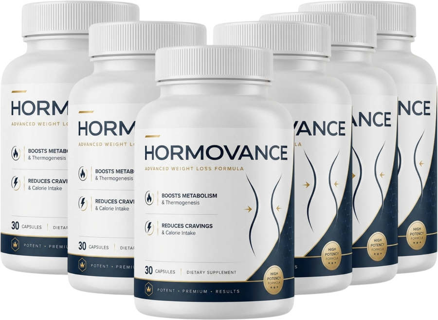

What Is Hormovance And How Does It Work?
The women who struggle most with weight aren't the ones who eat too much. They're the ones whose energy runs out before the day does.
Here's the pattern. Morning goes well — breakfast is reasonable, intentions are solid. Then somewhere around two or three in the afternoon, fatigue drops in uninvited. And a fatigued body doesn't politely suggest a nap — it sends you toward the nearest thing that lights up fast. A cookie. A handful of something crunchy. Whatever you'd never have touched at eight in the morning. The lift lasts minutes. The crash that follows lasts longer. And the next craving arrives right on schedule. This is the tired-hungry loop — and once you see it, it explains something no amount of self-discipline ever could: why the willpower that holds perfectly fine all morning collapses at the same predictable hour, day after day.
Think of your metabolism like a furnace with a damper. When the damper is wide open, a few logs burn low and steady through the whole day. When the damper closes halfway, the fire barely survives — so you keep throwing in kindling because kindling catches fast. Big flare, no lasting warmth, cold again before you notice. That's the loop. It's not a character flaw. It's a furnace with a restricted airflow.
Hormovance is a once-daily capsule designed to address all three sides of that loop simultaneously — not just one. One part of the formula targets the damper itself, supporting metabolic activity and thermogenesis so the body can efficiently burn what it takes in. Another part works on the kindling-grabbing, supporting healthy glucose metabolism and appetite balance so the afternoon demand arrives softer. And the third part addresses the energy foundation beneath everything, so there's less of a gap for cravings to rush into.
What it deliberately avoids being: a stimulant. No jittery surge, no pounding heart, no inevitable crash on the other end — because stimulants counterfeit the top of the loop while leaving the bottom entirely untouched.
Hormovance Ingredients
Six ingredients — each one earns its place on the label.
- Berberine HCL: A plant compound with a long history in wellness formulas, studied for how the body processes fats and sugars. This is the one working on the damper — the underlying metabolic equilibrium that determines whether food gets burned through or stored away.
- Green Tea Extract: Its catechins — EGCG in particular — rank among the most researched compounds in the metabolic support aisle. It supports healthy metabolic activity and the body's natural energy production, hitting the same lever from two different angles.
- Apple Cider Vinegar: The appetite side of the equation. Used in wellness formulas to support healthy eating habits and appetite awareness — the space between wanting something and actually reaching for it.
- Chromium: A mineral linked to healthy glucose metabolism and steady energy. This is the ingredient aimed most squarely at the spike-and-crash pattern that keeps the loop cycling.
- Cayenne Pepper: Delivers capsaicin, whose thermogenic properties support the body's natural heat production. It's the ingredient that opens the vent — more heat output means more burned rather than banked.
- Korean Ginseng: Supports natural energy, mental focus, and vitality while easing the feeling of daily tiredness. Not a stimulant lift — which is the entire point — steady energy is what fills the gap cravings keep falling into.
Read them together and the architecture reveals itself. Green tea, berberine, and cayenne open the damper. Apple cider vinegar and chromium quiet the kindling-grabbing. Korean ginseng keeps the underlying energy from dropping into the gap that starts the entire cycle. Hormovance is manufactured in the United States, in an FDA-registered, GMP-certified facility, and the formula is all natural, non-GMO, and gluten-free.
Hormovance Side Effects
The straightforward answer first: nothing in this formula is designed to act like a pharmaceutical.
Six ingredients, all of them botanicals and minerals the body already recognizes — a plant compound, a tea extract, a vinegar, a mineral, a pepper, and a root. That's a meaningfully different safety profile from formulas anchored to stimulants, which is exactly why Hormovance positions itself as balanced daily support rather than a jolt. No caffeine overload, no wired sensation, no crash to schedule your day around.
Manufacturing runs through an FDA-registered, GMP-certified facility in the United States, with the kind of batch-to-batch consistency that certification is meant to ensure. The formula is non-GMO and gluten-free, and it's built for sustained daily use over months — not a short aggressive burst.
A small number of people report a brief adjustment period during the first few days as the body acclimates — mild stomach discomfort, slight bloating, or a passing headache — and it generally resolves on its own. Stay at the recommended daily serving, and if you have an existing medical condition or take prescription medication, speak with your healthcare professional before starting.
Hormovance Dosage
One capsule per day. That's the entire commitment.
Each bottle holds 30 capsules — a complete 30-day supply at the recommended serving. Take it with a full glass of water, ideally with a meal, and keep the bottle somewhere cool, dry, and away from direct sunlight. No loading phase, no mid-day booster, no second dose to set an alarm for.
That simplicity is doing heavier lifting than it appears. The reason most supplement routines quietly fail isn't the supplement — it's the fourth dose of the day that stops happening somewhere around week three. One capsule with breakfast survives a hectic week, a work trip, a stretch of mornings that start before the alarm goes off. It survives being forgotten once.
Consistency is what the formula is architected around. Metabolic and appetite support is cumulative — it builds with daily use and unwinds when the bottle sits untouched. Most women pair it with the ordinary things that were already moving the needle: balanced meals, some activity, decent sleep. Do not exceed the recommended daily serving.
Hormovance – Refund Policy
A full 60-day window to decide — and a straightforward refund if you do.
That window is worth reading as more than fine print. A formula targeting the tired-hungry loop needs weeks to reveal what it does — the first sign most women notice isn't a number on the scale, it's a 3 p.m. that stops ambushing them. A 60-day guarantee gives that process enough runway to prove itself one way or the other before the decision becomes final. Companies don't extend two-month return windows on products they anticipate getting back.
If you're not satisfied for any reason, contact support within the 60 days and the purchase price is refunded in full. Complete terms and the refund process itself are available on the official Hormovance website — that's the place to go for anything beyond the basics.
Hormovance Customer Reviews
"I’d been fighting the same pattern for years — fine until about two in the afternoon, then the wheels would come off. Chips, bread, whatever was closest. It wasn’t hunger exactly, it was something I couldn’t explain. About three weeks into taking Hormovance every morning, I realized I’d walked through the kitchen at two-thirty without stopping. That had never happened. Six months in now, down twenty-eight pounds, and the part that still surprises me is that I didn’t white-knuckle any of it."
"I’ve tried enough supplements to fill a cabinet. Most of them either made me feel like I’d mainlined espresso or did absolutely nothing. Hormovance was the first one where the change snuck up on me. Two weeks in, my wife pointed out I hadn’t crashed on the couch after work in days. I hadn’t even noticed. Down eleven pounds, sleeping better, and my energy holds all the way through dinner instead of dropping off a cliff at four o’clock."
"After three kids and a decade of yo-yo dieting, I was honestly done trying. A friend handed me a bottle and I took it mostly to stop hearing about it. What I noticed first wasn’t weight — it was that the nine p.m. snacking just faded. I stopped standing at the fridge after the kids went to bed. The scale started moving about a month in, and thirteen pounds later, the habits I’d been trying to build for years are actually holding. That’s the part I never expected."
Hormovance – Where To Buy
Where you purchase Hormovance matters every bit as much as the decision to try it.
Hormovance is not sold through Amazon, eBay, Walmart, or any other third-party marketplace. Anything carrying the label on those platforms didn't ship from the manufacturer, and there's no way to confirm what's actually inside a bottle you're taking every single morning. Third-party listings also fall entirely outside the 60-day money-back guarantee — that protection only extends to orders placed through the official website.
Buying direct is also the only path to multi-bottle pricing, to real customer support if a question comes up, and to the guarantee actually being honored when you need it.
To ensure you’re getting the authentic product, most users choose to visit the official website directly.
Is Hormovance A Scam?
Nothing about this product reads like a scam. It reads like a carefully constructed daily formula built around a genuinely honest premise.
Every one of the six ingredients has a defined role on one of the three points of the tired-hungry loop — not a sprawling proprietary list padded with wellness-sounding extras. Manufacturing runs through an FDA-registered, GMP-certified U.S. facility. The claims stay within what a supplement can honestly say: support, balance, steadier energy. Nobody here is promising a number by Friday.
And it isn't for everyone. If your situation calls for something a supplement can't provide, this isn't a substitute for that conversation with your doctor, and plenty of people reach their goals an entirely different way. That's genuinely fine.
But if you recognize the loop — the morning that holds, the afternoon that doesn't, the craving that shows up on schedule whether you've been disciplined all week or not — this is a low-risk way to find out whether closing it changes anything. One capsule a day for a bottle or two. If nothing shifts, you send it back and you're out nothing but the time it took to find out.

For those who want to verify product details or check current availability, the official Hormovance website remains the safest and most reliable option.